Box scores, standings, and clippings, preserved from the scrapbook.
In the spring of 1952, the newly organized Little League of Newtown and Edgemont Townships opened its first season with a round-robin exhibition at the Alice Grimm Grade School Field. Four teams took the field that summer — the Cards, the Cubs, the Yanks, and the Giants — playing Monday through Thursday evenings at 6:30, with no admission charge.
| Team | Won | Lost |
|---|---|---|
| Yankees (Kirk Chevrolet–Mackey's Drug Store) | 3 | 0 |
| Giants (Ewing, Powell & Niemeyer) | 2 | 1 |
| Cubs (VFW Post 4952) | 0 | 3 |
| Cards (Rotary Club of West Chester Pike) | 0 | 3 |
Coach Frank Hargy's "strong, well-balanced" Yankees opened the season 3–0, capped by a 15–8 win over the second-place Giants on June 9. Early results: June 2, Yankees 14, Cubs 6; June 3, Giants 13, Cards 10; June 4, Yankees 22, Cubs 1; June 5, Giants 20, Cards 2; June 9, Yankees 15, Giants 8.
| Team | Won | Lost | Pct. |
|---|---|---|---|
| Yanks | 4 | 0 | 1.000 |
| Cubs | 2 | 1 | .666 |
| Cards | 0 | 3 | .000 |
| Giants | 0 | 2 | .000 |
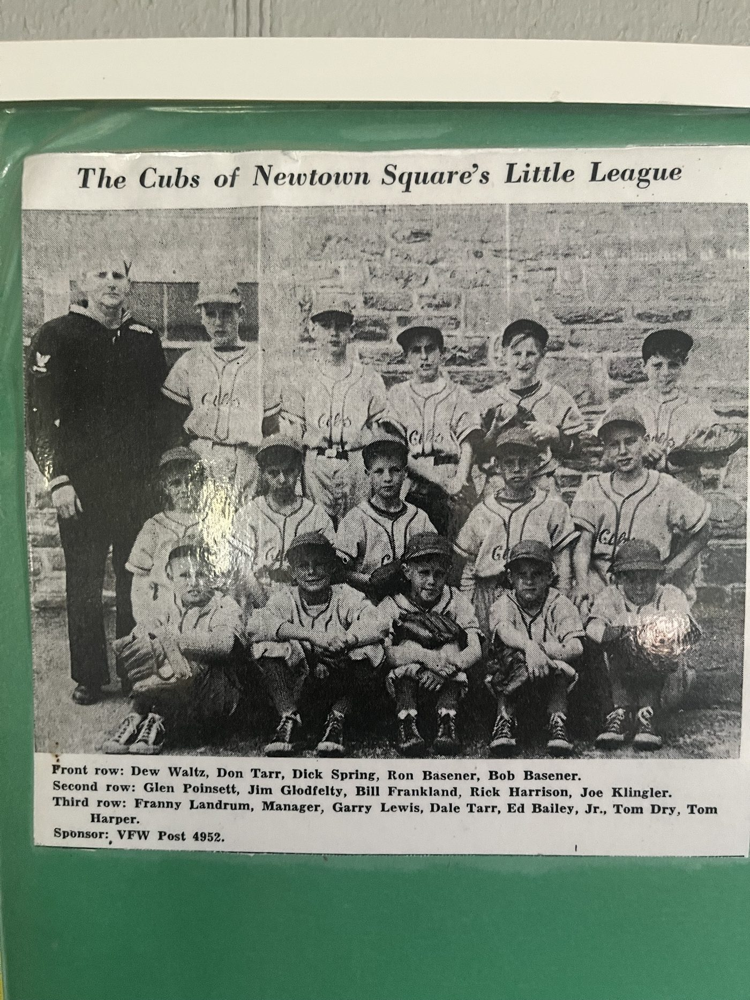
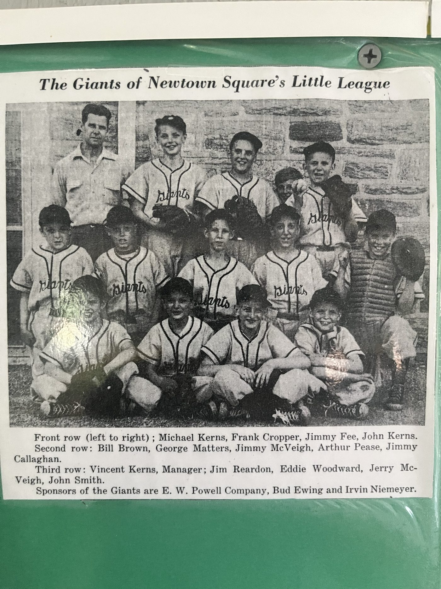
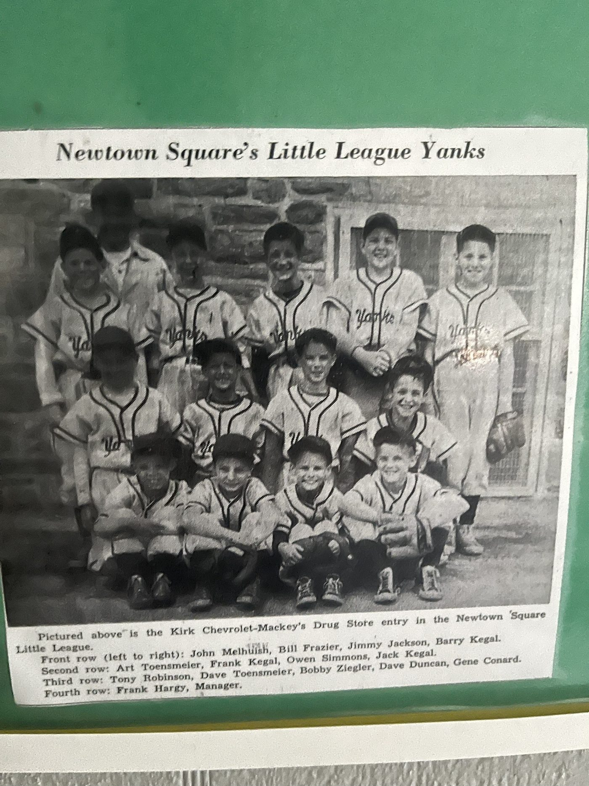
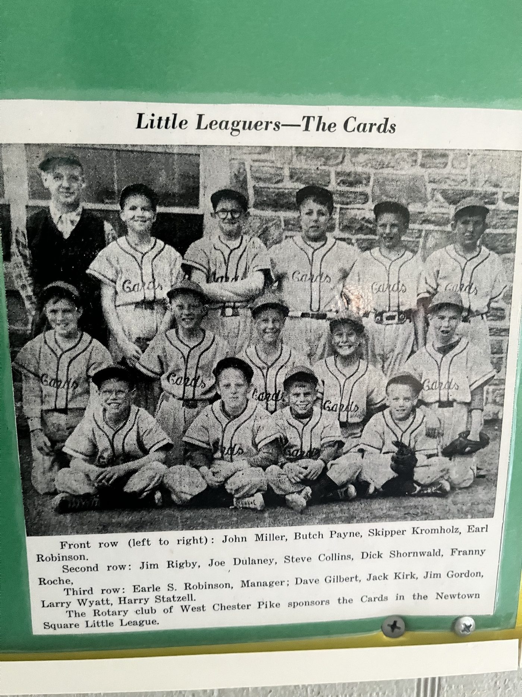
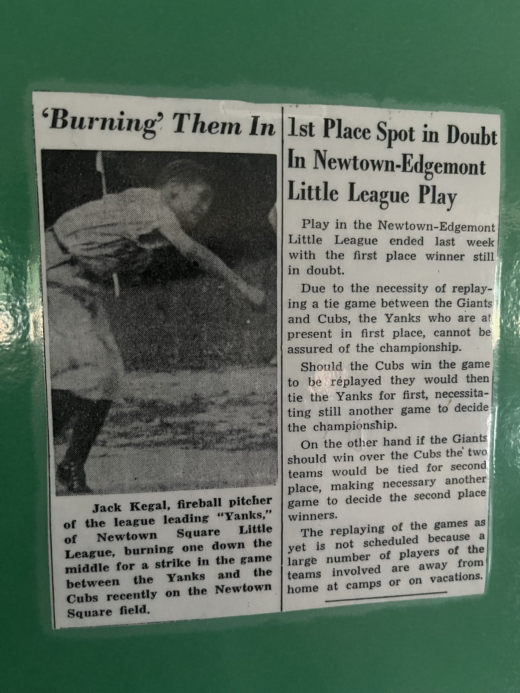
Jack Kegal, "fireball pitcher" of the Yanks
Play in the league ended one week with the first-place winner still undecided. Because a tie game between the Giants and Cubs needed to be replayed, the league-leading Yanks couldn't yet be assured of the championship — a Cubs win would force a tie atop the standings, and a Giants win would force a second-place tiebreaker. The makeup games went unscheduled for a time because so many players were away at camp or on vacation.
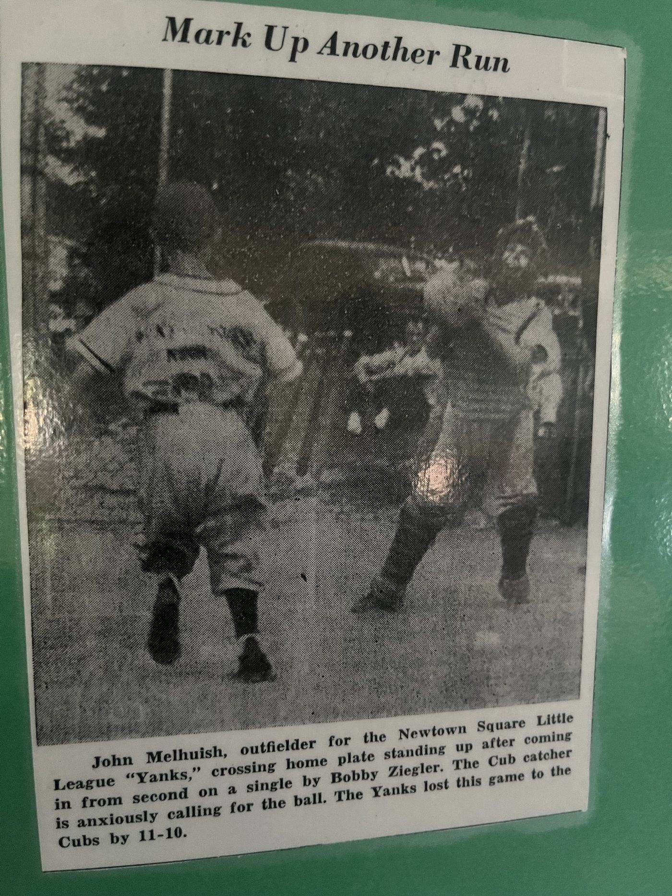
John Melhuish crosses home for the Yanks
Outfielder John Melhuish came in to score standing up on a single by Bobby Ziegler, with the Cub catcher anxiously calling for the ball — but the Yanks lost this one to the Cubs, 11 to 10.
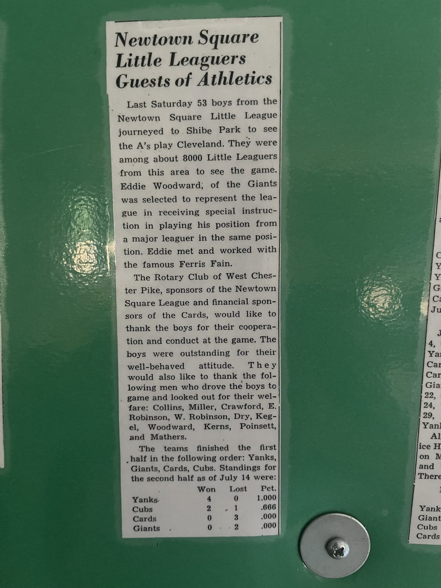
Trip to Shibe Park, Philadelphia
The league sent 53 boys to Shibe Park to watch the Philadelphia A's take on Cleveland, among roughly 8,000 Little Leaguers from the area. Eddie Woodward of the Giants was chosen to represent the league and received personal instruction at his position from major leaguer Ferris Fain. The Rotary Club of West Chester Pike thanked the boys for their conduct, and thanked the drivers who brought them: Collins, Miller, Crawford, E. Robinson, W. Robinson, Dry, Kegel, Woodward, Kerns, Poinsett, and Mathers.
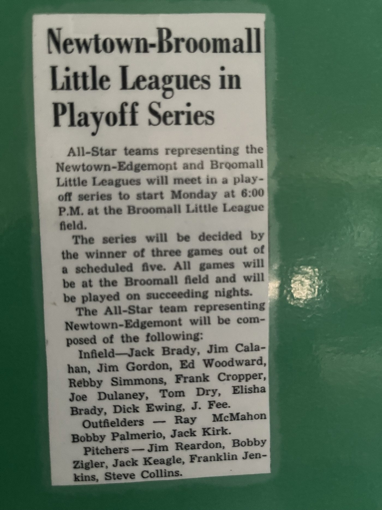
Series announcement
All-Star squads representing the Newtown-Edgemont and Broomall Little Leagues met in a best-of-five series at the Broomall field. The Newtown-Edgemont roster: Infield — Jack Brady, Jim Calahan, Jim Gordon, Ed Woodward, Rebby Simmons, Frank Cropper, Joe Dulaney, Tom Dry, Elisha Brady, Dick Ewing, J. Fee. Outfielders — Ray McMahon, Bobby Palmerio, Jack Kirk. Pitchers — Jim Reardon, Bobby Zigler, Jack Keagle, Franklin Jenkins, Steve Collins.
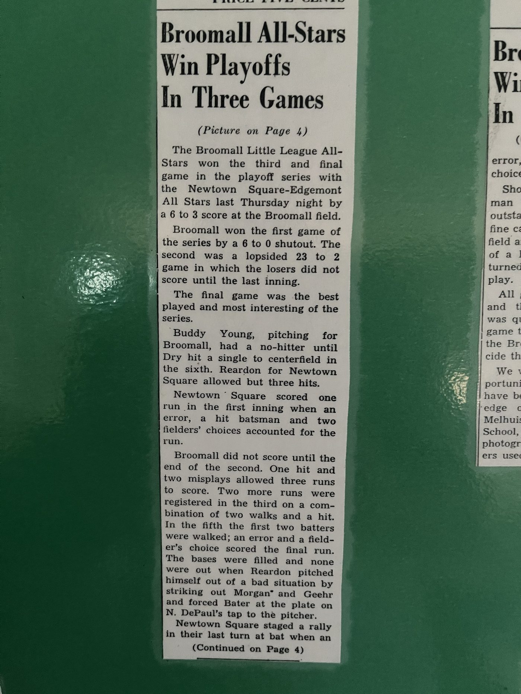
August 21, 1952 edition
Broomall took the series in three straight — a 6–0 shutout, a lopsided 23–2 game, and a tight 6–3 finale that the paper called the best-played of the series. Buddy Young carried a no-hitter for Broomall into the sixth before Tom Dry singled to center; Newtown-Edgemont's Jim Reardon allowed only three hits. Shortstop Dry and second baseman Kegel each turned outstanding plays, Kegel's a running, unassisted double play.
| Newtown-Edgemont All-Stars | |||
|---|---|---|---|
| AB | H | R | |
| Simmons, 3b | 3 | 0 | 0 |
| McMahon, rf | 3 | 0 | 1 |
| Jenkins, lf | 3 | 0 | 1 |
| Woodward, cf | 3 | 0 | 0 |
| Dry, ss | 3 | 1 | 0 |
| Reardon, p | 3 | 0 | 1 |
| Callaghan, c | 3 | 0 | 0 |
| Kegel, 2b | 2 | 0 | 0 |
| Ewing, 1b | 2 | 0 | 0 |
| Totals | 25 | 1 | 3 |
| Broomall All-Stars | |||
|---|---|---|---|
| AB | H | R | |
| N. DePaul, 3b | 4 | 1 | 0 |
| Spector, 1b | 3 | 0 | 0 |
| Martin, c | 3 | 1 | 1 |
| D. DePaul, 2b | 3 | 0 | 1 |
| Anson, cf | 3 | 0 | 1 |
| Young, p | 3 | 0 | 1 |
| Bater, rf | 3 | 1 | 1 |
| Morgan, ss | 3 | 0 | 1 |
| J. Norman, lf | 1 | 0 | 0 |
| Geehr, lf | 2 | 0 | 0 |
| Totals | 28 | 3 | 6 |
Score by innings — Newtown Sq.: 1 0 0 0 0 2—3 | Broomall: 0 3 2 0 0 1—6. Umpires: Schofield (plate), Virtue (1st), Kegel (3rd). The paper closed the season thanking John Melhuish of the Ellis Country School for the season's photographs.
The league returned in the spring of 1953 under a new name, the Newtown-Edgmont Little League, with 125 boys turning out for tryouts at the Marple-Newtown High School grounds under managers Frank Hargy, Fran Landrum, Vince Kearns, and Earl Robinson. That year the league also broke ground on a permanent home: a new field on Bishop Hollow Road, built with volunteer labor from both townships.
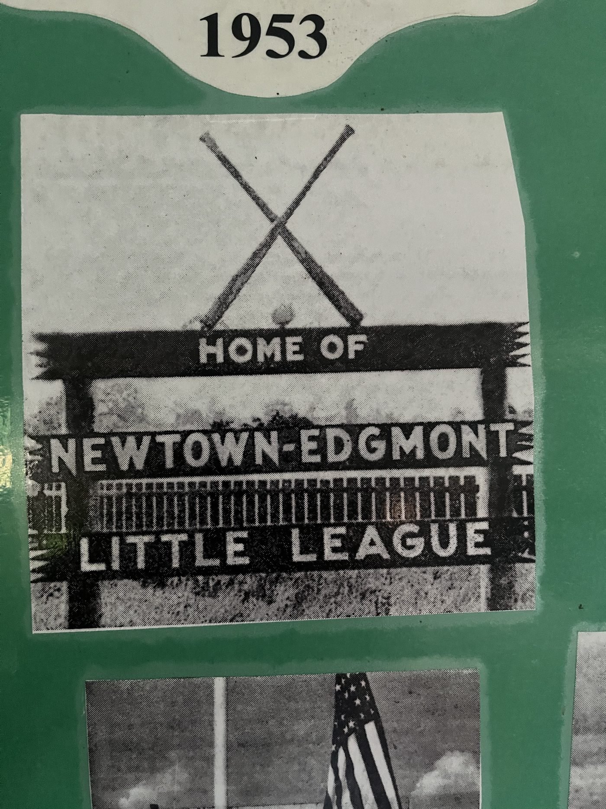
The gateway sign at the new Bishop Hollow Road field, described by the league as "one of the finest Little League fields in the eastern United States."
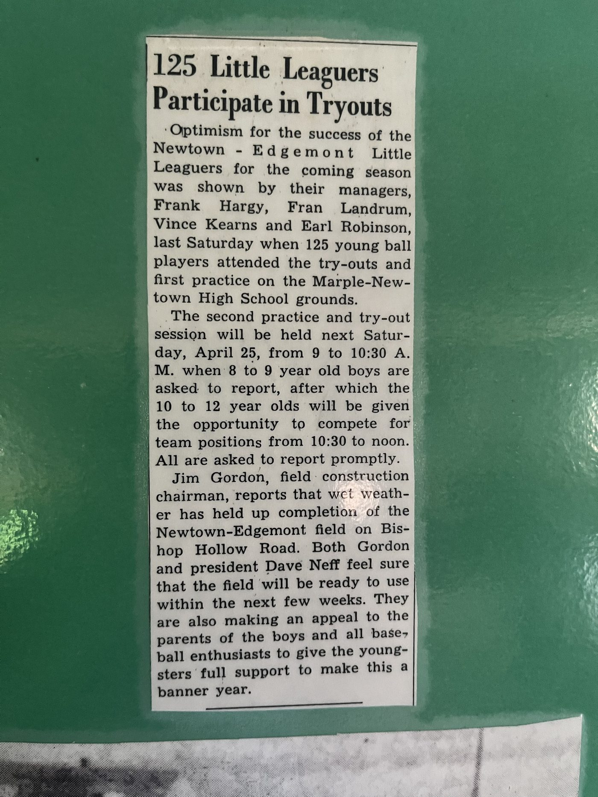
Tryout coverage, spring 1953
Field construction chairman Jim Gordon reported that wet weather had held up completion of the new grounds, though he and league president Dave Neff felt confident it would be ready within weeks. A second tryout session followed on April 25 — 8- and 9-year-olds from 9 to 10:30 a.m., 10- to 12-year-olds from 10:30 to noon.
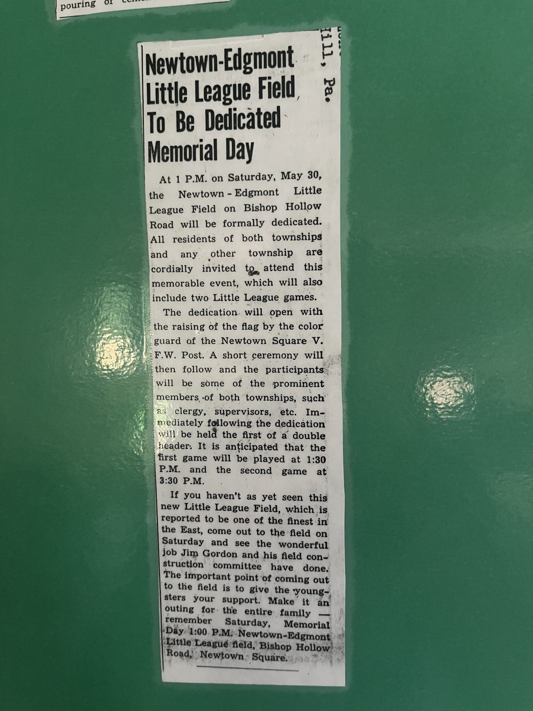
Volunteers at work on the new grounds
Men of both Newtown and Edgemont Townships volunteered to rake stones, dig post holes, and build the outfield fence; local contractors donated equipment and labor for grading, dugout cement, and more. The field sat on a hill opposite the Troop Farm — a site the construction committee believed would rank among the finest Little League fields in the eastern United States.
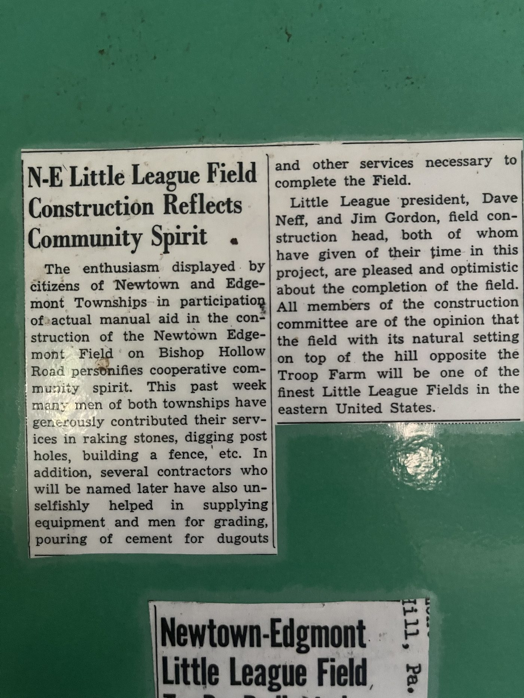
Dedication announcement
The dedication opened with a flag-raising by the color guard of the Newtown Square VFW Post, followed by remarks from clergy and township supervisors, and a doubleheader — the first game at 1:30, the second at 3:30. All residents of both townships, and any others, were cordially invited.
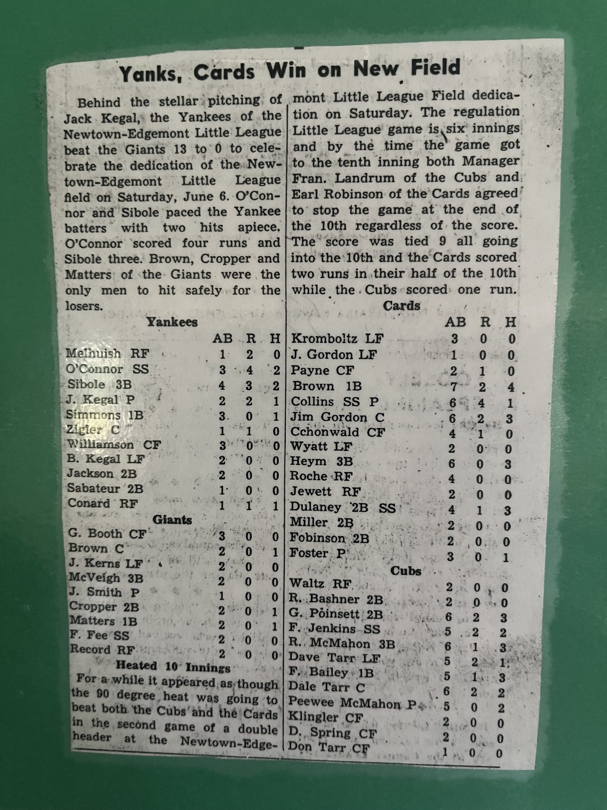
June 6, 1953 dedication-day results
Behind Jack Kegal's pitching, the Yankees beat the Giants 13–0 to celebrate the field's dedication; O'Connor and Sibole each collected two hits. In the second game, Manager Fran Landrum of the Cubs and Manager Earl Robinson of the Cards agreed in advance to stop the game after ten innings regardless of score — the teams were tied 9–9 entering the frame, and the Cards scored twice in their half to the Cubs' one, winning 11–10.
The same four clubs — Cubs, Giants, Yanks, and Cards — returned to defend their standing, now battling for the first Newtown-Edgmont Little League title on their brand-new field.
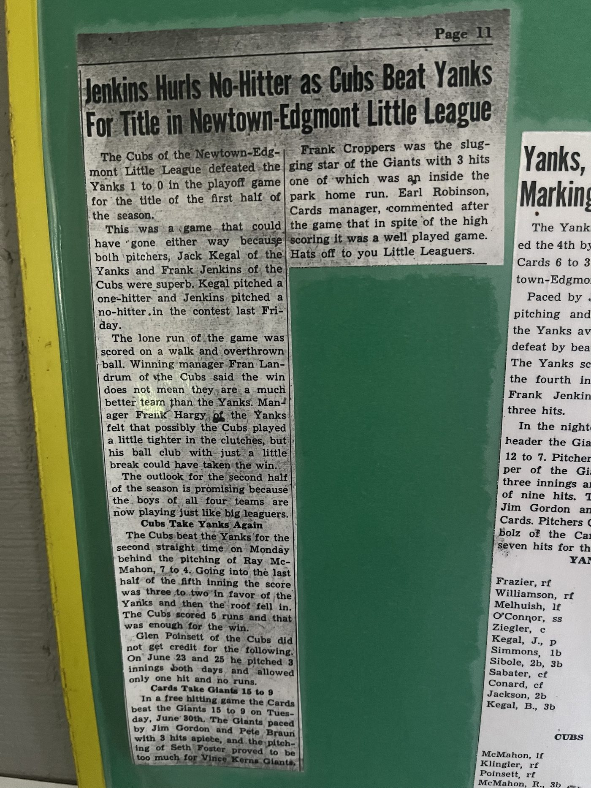
First-half title game
Jack Kegal of the Yanks threw a one-hitter; Frank Jenkins of the Cubs matched him with a no-hitter. The lone run scored on a walk and an overthrown ball. Winning manager Fran Landrum said the win didn't make the Cubs a much better team than the Yanks — Yanks manager Frank Hargy agreed his club "could have taken the win" with just a little more luck. Earlier in the week, the Cubs beat the Yanks again, 7–4, scoring five runs in the fifth inning behind Ray McMahon's pitching, and the Cards downed the Giants, 15–9, behind Jim Gordon, Pete Braun, and pitcher Seth Foster.
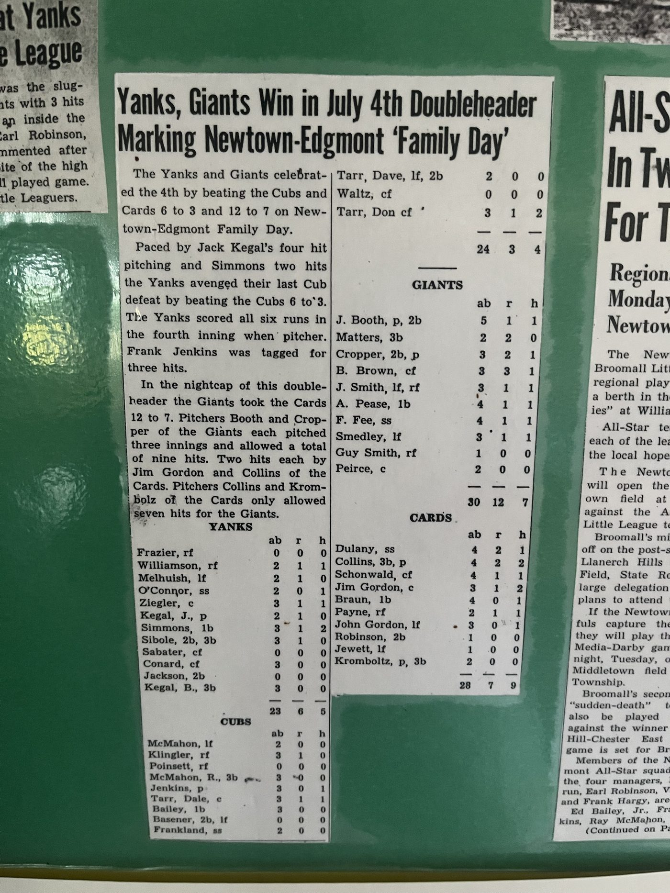
Family Day doubleheader
The Yanks avenged an earlier loss to the Cubs, winning 6–3 on the strength of Jack Kegal's four-hit pitching and a six-run fourth inning off Frank Jenkins. In the nightcap, the Giants topped the Cards 12–7, with pitchers Booth and Cropper combining on the win.
| Yanks (6) — def. Cubs (3) | |||
|---|---|---|---|
| AB | R | H | |
| Frazier, rf | 0 | 0 | 0 |
| Williamson, rf | 2 | 1 | 1 |
| Melhuish, lf | 2 | 1 | 0 |
| O'Connor, ss | 2 | 0 | 1 |
| Ziegler, c | 3 | 1 | 1 |
| Kegal, J., p | 2 | 1 | 0 |
| Simmons, 1b | 3 | 1 | 2 |
| Sibole, 2b/3b | 3 | 1 | 0 |
| Totals | 23 | 6 | 5 |
| Giants (12) — def. Cards (7) | |||
|---|---|---|---|
| AB | R | H | |
| J. Booth, p/2b | 5 | 1 | 1 |
| Matters, 3b | 2 | 2 | 0 |
| Cropper, 2b/p | 3 | 2 | 1 |
| B. Brown, cf | 3 | 3 | 1 |
| J. Smith, lf/rf | 3 | 1 | 1 |
| A. Pease, 1b | 4 | 1 | 1 |
| F. Fee, ss | 4 | 1 | 1 |
| Totals | 30 | 12 | 7 |
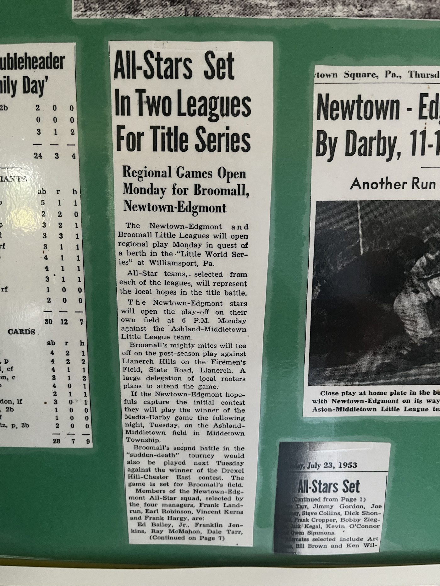
July 23, 1953 edition
The Newtown-Edgmont and Broomall Little Leagues opened regional play in quest of a berth in the Little World Series at Williamsport, Pa. Newtown-Edgmont's All-Stars, selected by managers Frank Landrum, Earl Robinson, Vincent Kerns, and Frank Hargy, opened at home against Ashland-Middletown: Ed Bailey Jr., Franklin Jenkins, Ray McMahon, Dale Tarr, Jimmy Gordon, Steve Collins, Dick Shonwald, Frank Cropper, Bobby Ziegler, Jack Kegal, Kevin O'Connor, and Owen Simmons, with alternates Bill Brown and Ken Williamson.
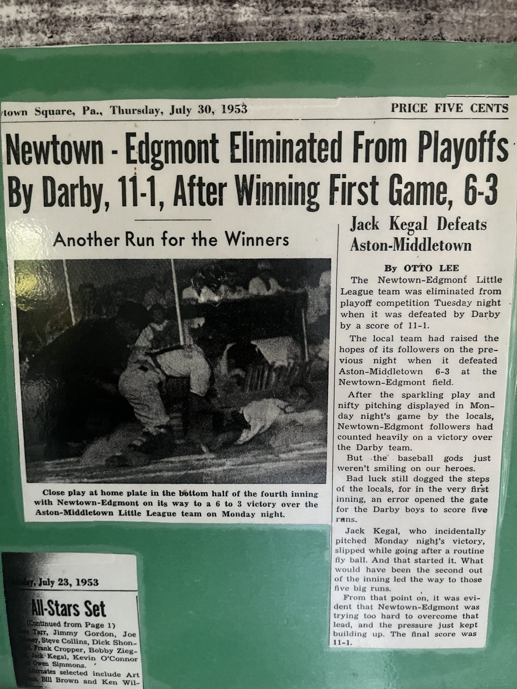
July 30, 1953 edition
Jack Kegal beat Aston-Middletown, 6–3, on Monday night to keep the local nine's hopes alive. But the very next night, an early error opened the door for Darby to score five first-inning runs, and Newtown-Edgmont could not recover, falling 11–1 to end the season. "The baseball gods just weren't smiling on our heroes," the paper wrote, "but the pressure just kept building up."
Little Leaguers paused on the diamond at Bishop Hollow Road before the 1954 opener, and the league returned with four teams — Cubs, Giants, Yanks, and Cards — plus, for the first time in the scrapbook's record, a farm system of younger squads: the Pirates, Dodgers, Orioles, and Indians.
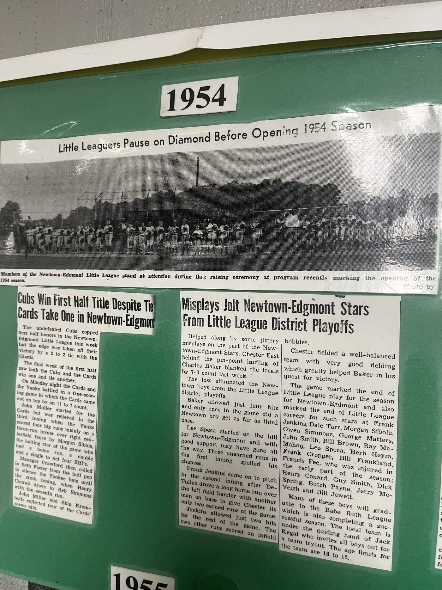
Members of the Newtown-Edgmont Little League stand at attention during the flag-raising ceremony marking the opening of the 1954 season.
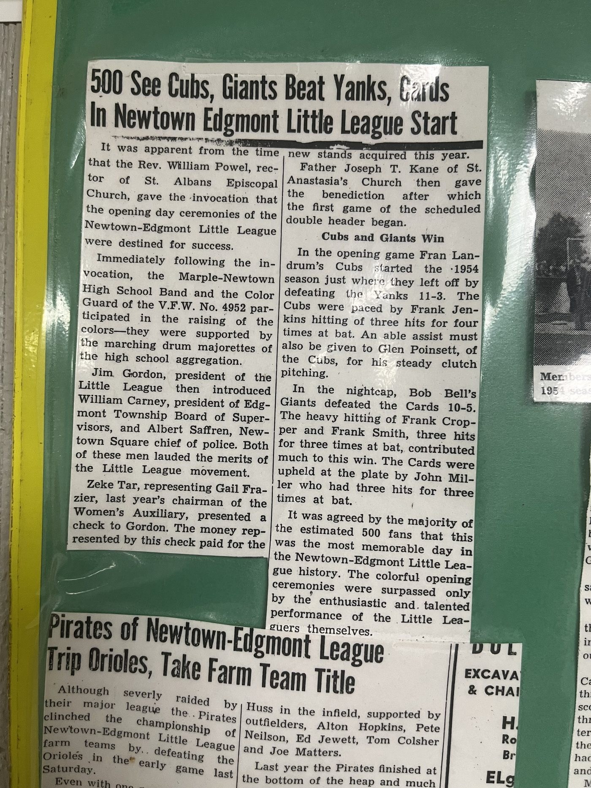
Opening day coverage
The Rev. William Powel of St. Albans Episcopal Church gave the invocation; the Marple-Newtown High School Band and the color guard of VFW Post 4952 raised the colors, backed by the high school's marching drum majorettes. League president Jim Gordon introduced Edgmont Township Board president William Carney and Newtown Square police chief Albert Saffren, and Zeke Tar presented a check on behalf of the Women's Auxiliary to pay for new stands. Father Joseph T. Kane of St. Anastasia's gave the benediction before the doubleheader began. Fran Landrum's Cubs opened the season by beating the Yanks 11–3, led by Frank Jenkins' three hits in four at-bats and Glen Poinsett's clutch pitching. In the nightcap, Bob Bell's Giants topped the Cards 10–5 behind three-hit games from Frank Cropper and Frank Smith, with John Miller (3-for-3) keeping the Cards close. An estimated 500 fans called it the most memorable day in the league's history.
A separate clipping pasted nearby, headlined "NE Little League Opens With Two Thrillers," gives a different tally for the Cubs–Yanks opener — Cubs 7, Yanks 0, decided on a sixth-inning bunt single by Mike Smith and a base hit by Miller, with Seth Foster the losing pitcher. The scrapbook doesn't make clear whether this refers to a different game, a different level of play, or an early wire report later corrected — both figures are preserved here as printed.
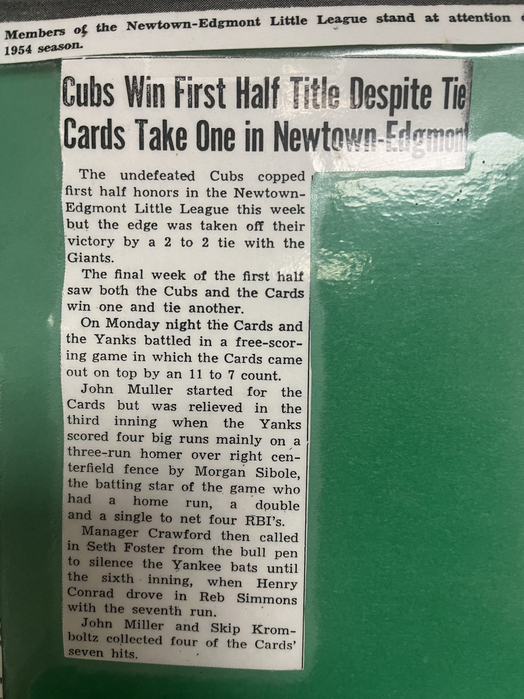
Mid-season standings battle
The undefeated Cubs claimed first-half honors, though a 2–2 tie with the Giants took some shine off it. In the final week, the Cards beat the Yanks 11–7 in a slugfest: John Muller started for the Cards but was pulled in the third after the Yanks scored four runs, keyed by a three-run homer from Morgan Sibole, who added a double and a single for four RBI on the day. Manager Crawford called in Seth Foster from the bullpen, and Henry Conrad's single in the sixth plated the go-ahead run for the Cards. John Miller and Skip Kromboltz combined for four of the Cards' seven hits.
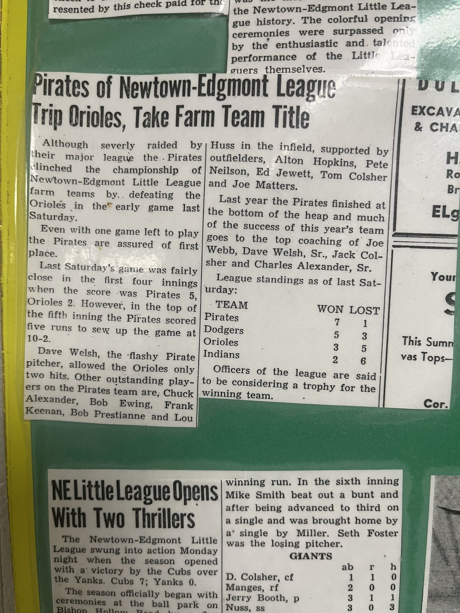
The farm league's first champions
A year after finishing at the bottom, the Pirates clinched the farm-team championship by beating the Orioles, 10–2, with a five-run fifth inning breaking open a close game. Pitcher Dave Welsh allowed just two hits. The coaching staff of Joe Webb, Dave Welsh Sr., Jack Colsher, and Charles Alexander Sr. got credit for the turnaround, with standout play from Chuck Alexander, Bob Ewing, Frank Keenan, Bob Prestianne, and Lou Huss in the infield, and outfielders Alton Hopkins, Pete Neilson, Ed Jewett, Tom Colsher, and Joe Matters.
| Team | Won | Lost |
|---|---|---|
| Pirates | 7 | 1 |
| Dodgers | 5 | 3 |
| Orioles | 3 | 5 |
| Indians | 2 | 6 |
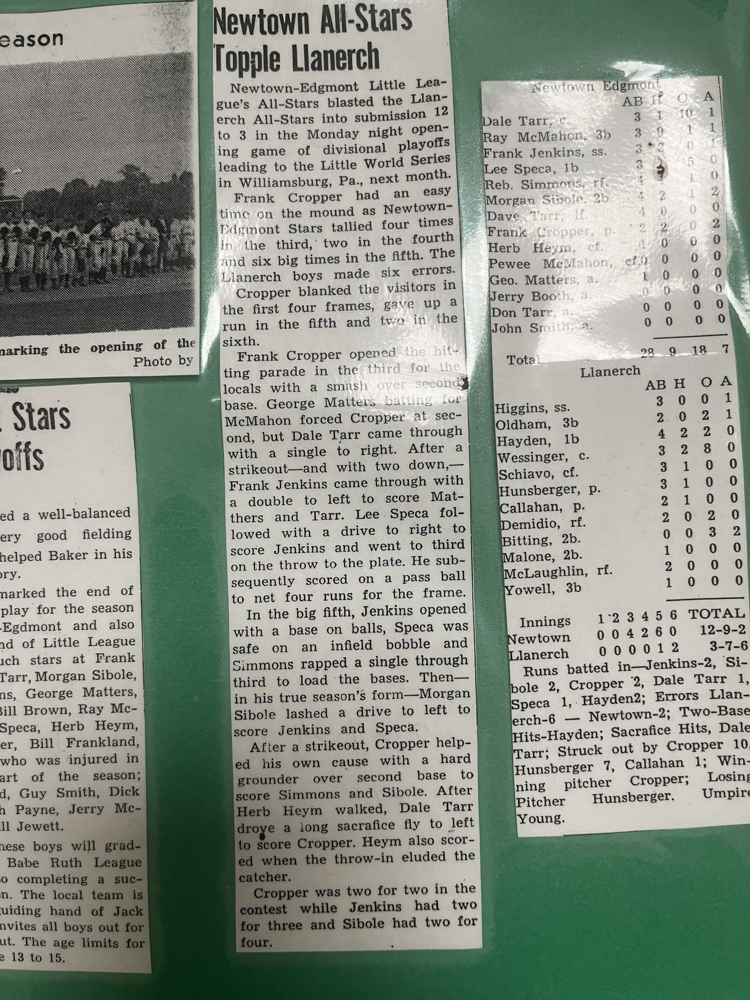
Opening round of the district playoffs
Newtown-Edgmont's All-Stars blasted Llanerch's All-Stars 12–3 in the Monday-night opener of the divisional playoffs on the road to the Little League World Series. Frank Cropper had an easy time on the mound, scattering the scoring across a four-run third, a two-run fourth, and a six-run fifth, while Llanerch made six errors behind him. Cropper went 2-for-2 at the plate; Frank Jenkins was 2-for-3 with a key double; Morgan Sibole added a two-run double of his own in the big fifth inning.
| Newtown-Edgmont (12) | ||||
|---|---|---|---|---|
| AB | H | O | A | |
| Dale Tarr, c | 3 | 1 | 10 | 1 |
| Ray McMahon, 3b | 3 | 0 | 1 | 1 |
| Frank Jenkins, ss | 3 | 2 | 5 | 0 |
| Lee Speca, 1b | 3 | 1 | 4 | 0 |
| Reb. Simmons, rf | 4 | 1 | 1 | 0 |
| Morgan Sibole, 2b | 4 | 2 | 1 | 2 |
| Dave Tarr, lf | 4 | 0 | 0 | 0 |
| Frank Cropper, p | 2 | 2 | 0 | 2 |
| Herb Heym, cf | 1 | 0 | 0 | 0 |
| Pewee McMahon, cf | 0 | 0 | 0 | 0 |
| Geo. Matters (alt.) | 1 | 0 | 0 | 0 |
| Totals | 28 | 9 | 18 | 7 |
| Llanerch (3) | ||||
|---|---|---|---|---|
| AB | H | O | A | |
| Higgins, ss | 3 | 0 | 0 | 1 |
| Oldham, 3b | 2 | 0 | 2 | 1 |
| Hayden, 1b | 4 | 2 | 2 | 0 |
| Wessinger, c | 3 | 2 | 8 | 0 |
| Schiavo, cf | 3 | 1 | 0 | 0 |
| Hunsberger, p | 3 | 1 | 0 | 0 |
| Callahan, p | 2 | 1 | 0 | 0 |
| Demidio, rf | 2 | 0 | 2 | 0 |
| Totals | — | 7 | — | — |
By innings — Newtown: 0 0 4 2 6 0 (12-9-2) | Llanerch: 0 0 0 0 1 2 (3-7-6). RBI: Jenkins 2, Sibole 2, Cropper 2, Dale Tarr 1, Speca 1, Hayden 2. Struck out: Cropper 10, Hunsberger 7, Callahan 1. Winning pitcher: Cropper. Losing pitcher: Hunsberger. Umpire: Young.
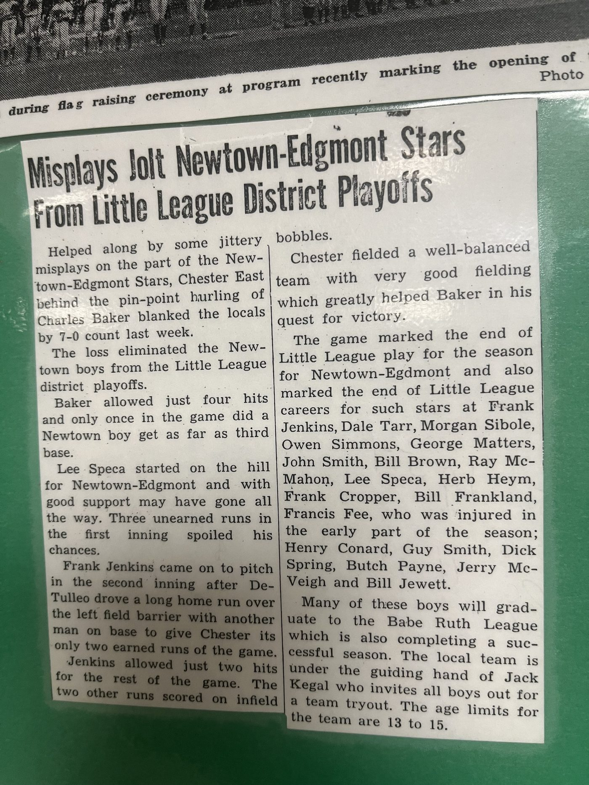
The season's final game
Behind the pinpoint pitching of Charles Baker, Chester East blanked the locals 7–0, eliminating Newtown-Edgmont from the district playoffs. Baker allowed just four hits and only once did a Newtown runner reach third. Three unearned runs in the first, off starter Lee Speca, put the game out of reach early; Frank Jenkins relieved after a two-run homer and allowed just two hits the rest of the way. The paper noted the loss also closed out Little League careers (by age) for a long list of the league's stars: Frank Jenkins, Dale Tarr, Morgan Sibole, Owen Simmons, George Matters, John Smith, Bill Brown, Ray McMahon, Lee Speca, Herb Heym, Frank Cropper, Bill Frankland, Francis Fee (injured earlier in the season), Henry Conard, Guy Smith, Dick Spring, Butch Payne, Jerry McVeigh, and Bill Jewett — many of whom were moving up to the Babe Ruth League, coached by Jack Kegal, which was also completing a successful season.
The Newtown-Edgmont Little League opened its 1955 season on Bishop Hollow Road with a flag-raising by the VFW color guard, an invocation from Reverend William Powel, and a welcome from league president Otto Lee. Four teams were back in action — Cubs, Giants, Yanks, and Cards — and by year's end the league had a new clubhouse under construction and had sent its best 15 players into a sectional playoff with Broomall.
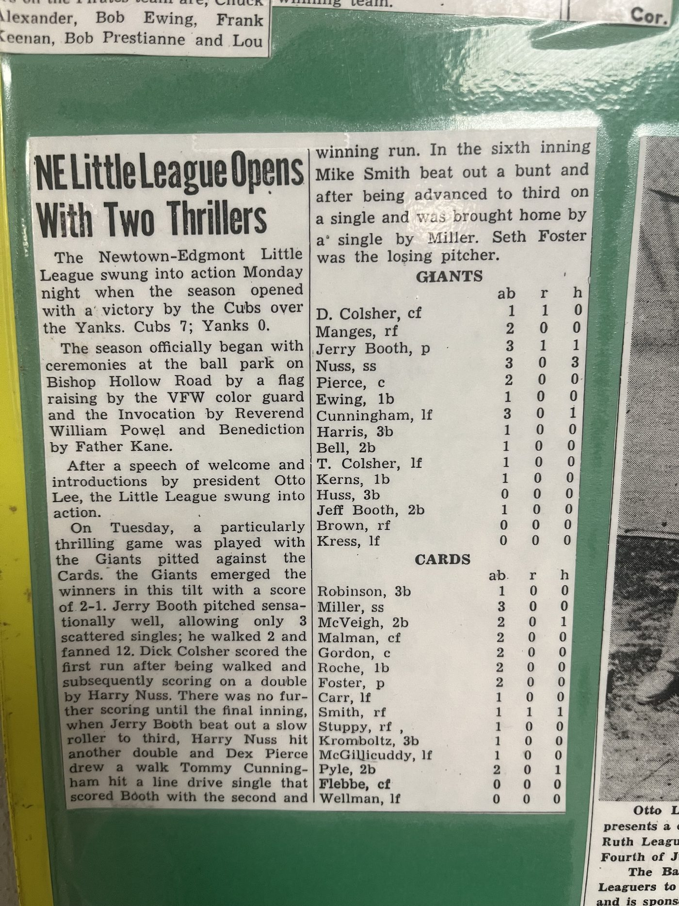
Opening week coverage
The season opened Monday night with the Cubs shutting out the Yanks, 7–0, after ceremonies at the ball park that included the VFW color guard's flag-raising, an invocation from Reverend William Powel, and a benediction from Father Kane. On Tuesday, the Giants nipped the Cards 2–1 in a pitchers' duel: Jerry Booth allowed just three scattered singles, walking two and striking out twelve. Dick Colsher scored the Giants' first run after a walk and a Harry Nuss double, and in the final inning Booth beat out a slow roller, Nuss doubled again, Dex Pierce walked, and Tommy Cunningham's line-drive single brought home the winning run.
| Giants (2) | |||
|---|---|---|---|
| AB | R | H | |
| D. Colsher, cf | 1 | 1 | 0 |
| Manges, rf | 2 | 0 | 0 |
| Jerry Booth, p | 3 | 1 | 1 |
| Nuss, ss | 3 | 0 | 3 |
| Pierce, c | 2 | 0 | 0 |
| Ewing, 1b | 1 | 0 | 0 |
| Cunningham, lf | 3 | 0 | 1 |
| Harris, 3b | 1 | 0 | 0 |
| Bell, 2b | 1 | 0 | 0 |
| Cards (1) | |||
|---|---|---|---|
| AB | R | H | |
| Robinson, 3b | 1 | 0 | 0 |
| Miller, ss | 3 | 0 | 0 |
| McVeigh, 2b | 2 | 0 | 1 |
| Malman, cf | 2 | 0 | 0 |
| Gordon, c | 2 | 0 | 0 |
| Roche, 1b | 2 | 0 | 0 |
| Foster, p | 2 | 0 | 0 |
| Smith, rf | 1 | 1 | 1 |
| Kromboltz, 3b | 1 | 0 | 0 |
A separate account elsewhere in the same clipping describes a sixth-inning bunt single by Mike Smith, advanced and driven in by a Miller single, with Seth Foster named the losing pitcher — details that don't fully square with the box score above. As with the 1954 opener, both versions are preserved here as printed.
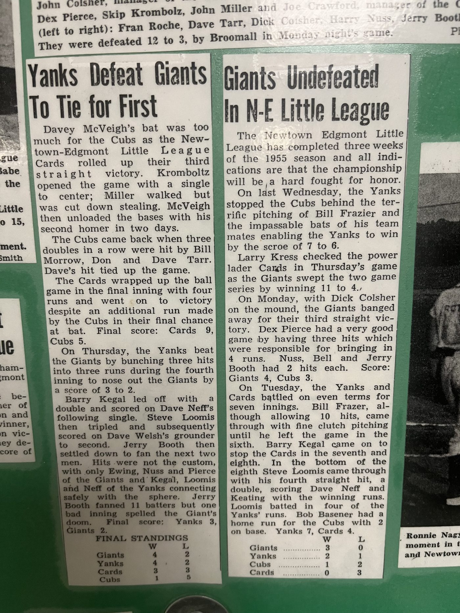
Mid-season standings battle
Davey McVeigh's bat was too much for the Cubs as the Cards rolled up their third straight win, 9–5 — McVeigh unloaded the bases with his second homer in two days, and the Cubs answered with three straight doubles from Bill Morrow, Don Tarr, and Dave Tarr before the Cards pulled away with a four-run final inning. On Thursday, the Yanks nosed out the Giants 3–2 on a three-run fourth inning, with Barry Kegal and Jerry Booth (11 strikeouts) starring for the winners.
A week later, the Giants remained undefeated: Bill Frazier out-pitched the Cubs for a 7–6 Yankee win, Larry Kress checked the Cards in an 11–4 Giants sweep, and Dick Colsher's Giants beat the Cubs 4–3 behind three hits and four RBI from Dex Pierce. In a seven-inning battle between the Yanks and Cards, Steve Loomis's eighth-inning double — his fourth straight hit — drove in the winning runs for a 7–4 Yankee win, while Bob Basener homered with two on for the Cubs in a losing effort.
| Team | Won | Lost |
|---|---|---|
| Giants | 4 | 2 |
| Yanks | 4 | 2 |
| Cards | 3 | 3 |
| Cubs | 1 | 5 |
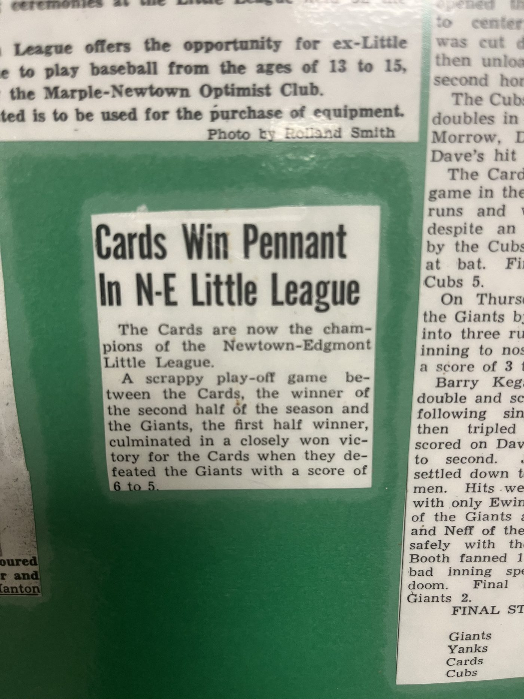
Season-ending playoff
The Cards, second-half winners, met the Giants, first-half winners, in a scrappy playoff game for the league championship — and came away with a close 6–5 victory to claim the pennant.
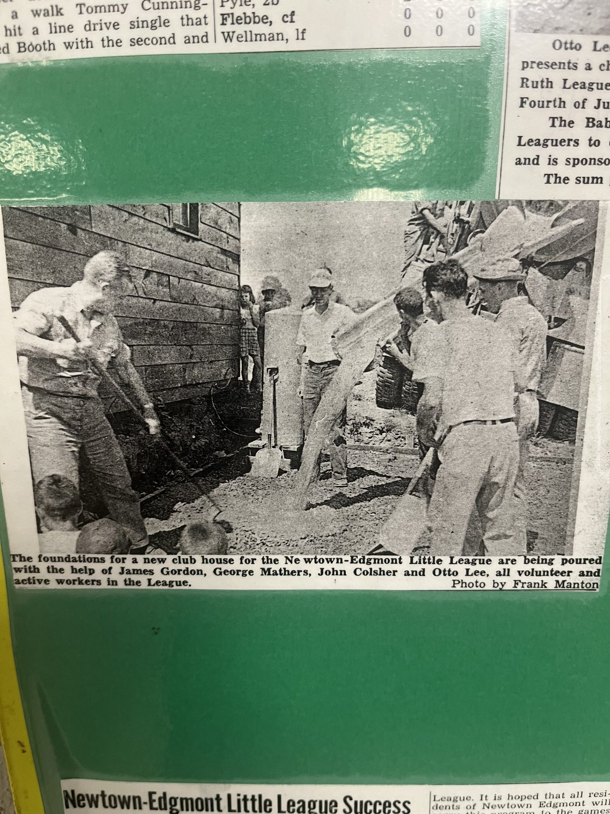
Building for the future
Volunteers poured the foundations for a new clubhouse at the field, with James Gordon, George Mathers, John Colsher, and league president Otto Lee among the active workers who gave their time to the project.
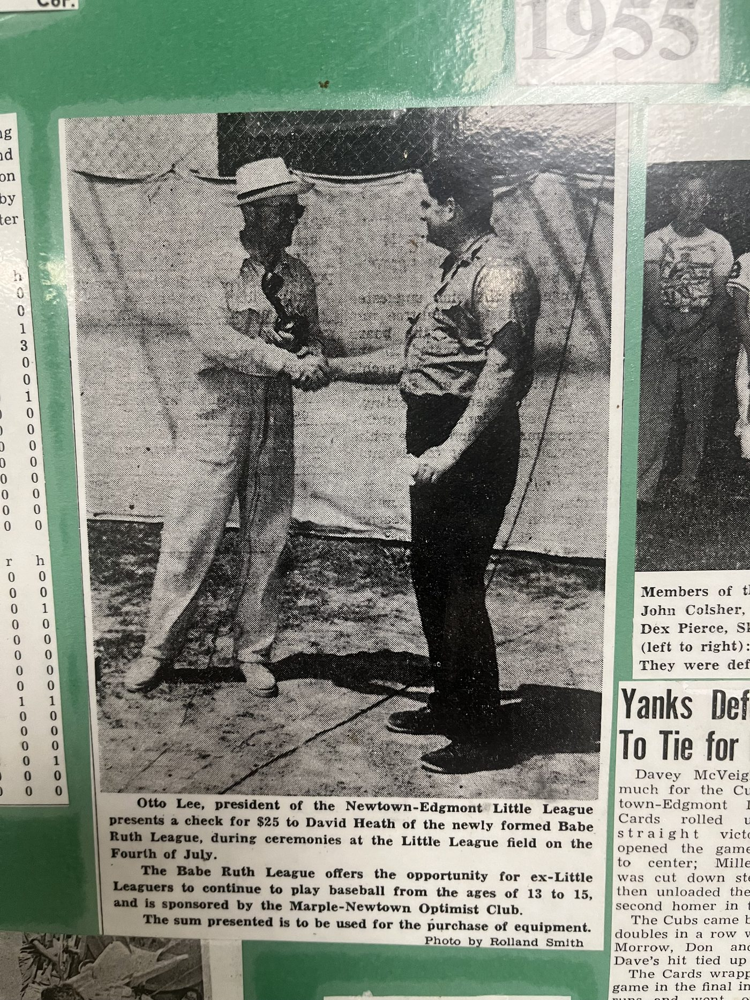
Fourth of July ceremony
On the Fourth of July, league president Otto Lee presented a $25 check to David Heath of the newly formed Babe Ruth League, which gave graduating Little Leaguers ages 13–15 a place to keep playing. The new league was sponsored by the Marple-Newtown Optimist Club, and the gift was earmarked for equipment.
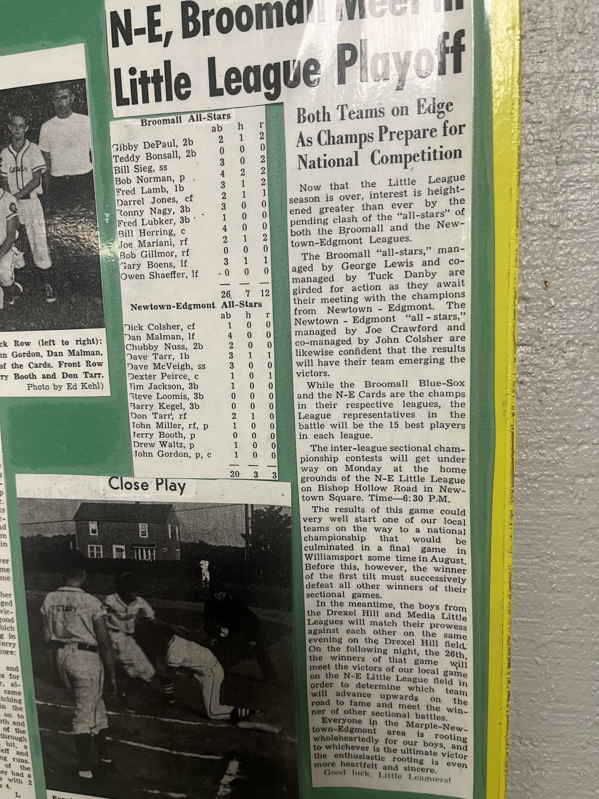
Sectional playoff coverage
With the regular season complete, the league sent its 15 best players into a sectional all-star series against Broomall, in a chase for a spot in the national championship at Williamsport. Newtown-Edgmont's All-Stars, managed by Cards skipper Joe Crawford and co-managed by Giants manager John Colsher, fell to Broomall's All-Stars — managed by George Lewis and co-managed by Tuck Danby — by a score of 12 to 3 in the Monday-night opener. The paper noted that the winner of the sectional would need to successively defeat every other sectional winner on the road to a possible national title in Williamsport that August, and closed with a simple wish: "Good luck, Little Leaguers!"
| Broomall All-Stars (12) | |||
|---|---|---|---|
| AB | H | R | |
| Gibby DePaul, 2b | 2 | 1 | 2 |
| Teddy Bonsall, 2b | 0 | 1 | 0 |
| Bill Sieg, ss | 3 | 0 | 2 |
| Bob Norman, p | 4 | 2 | 2 |
| Fred Lamb, 1b | 3 | 1 | 1 |
| Darrel Jones, cf | 2 | 1 | 1 |
| Ronny Nagy, 3b | 3 | 0 | 0 |
| Bill Herring, c | 2 | 1 | 2 |
| Gary Boens, lf | 3 | 1 | 1 |
| Totals | 26 | 7 | 12 |
| Newtown-Edgmont All-Stars (3) | |||
|---|---|---|---|
| AB | H | R | |
| Dick Colsher, cf | 1 | 0 | 0 |
| Dan Malman, lf | 4 | 0 | 0 |
| Chubby Nuss, 2b | 2 | 0 | 0 |
| Dave Tarr, 1b | 3 | 1 | 1 |
| Dave McVeigh, ss | 3 | 0 | 0 |
| Dexter Pierce, c | 1 | 0 | 1 |
| Don Tarr, rf | 2 | 1 | 0 |
| John Miller, rf/p | 1 | 0 | 0 |
| Jerry Booth, p | 0 | 0 | 0 |
| Drew Waltz, p | 1 | 0 | 0 |
| John Gordon, p/c | 1 | 0 | 0 |
| Totals | 20 | 3 | 3 |
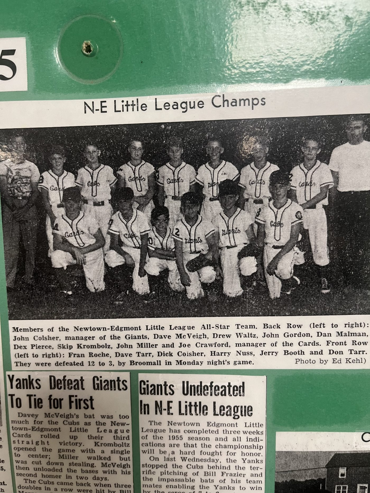
The 1955 Newtown-Edgmont All-Star Team. Back row: John Colsher (manager, Giants), Dave McVeigh, Drew Waltz, John Gordon, Dan Malman, Dex Pierce, Skip Kromboltz, John Miller, Joe Crawford (manager, Cards). Front row: Fran Roche, Dave Tarr, Dick Colsher, Harry Nuss, Jerry Booth, Don Tarr. Photo by Ed Kehl.
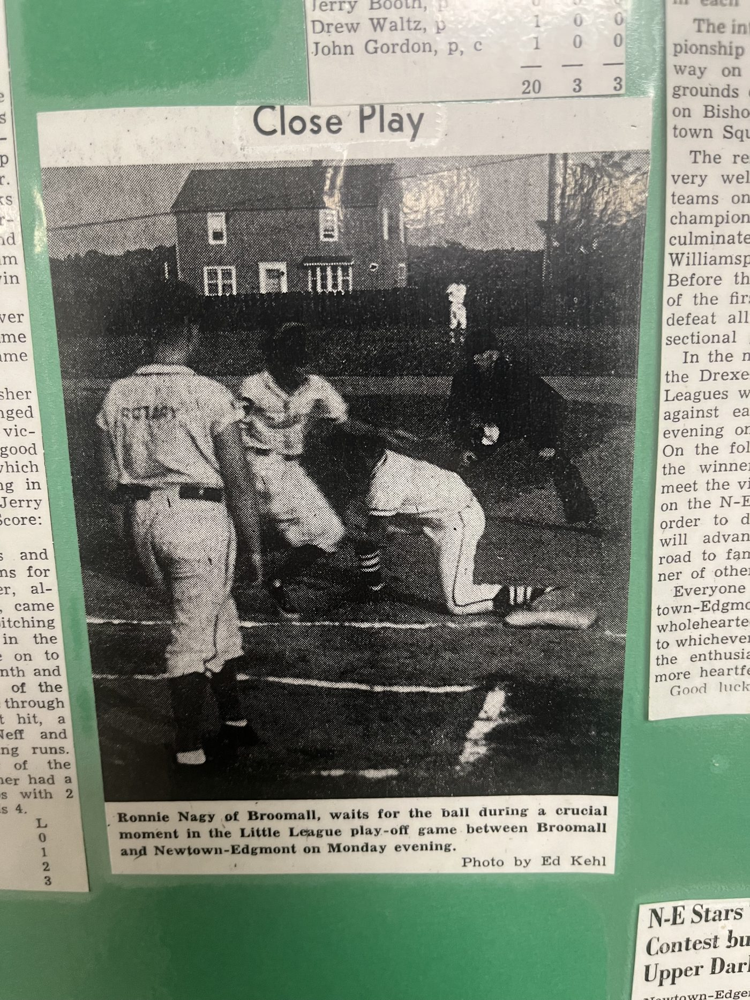
A crucial moment at the plate
"Ronnie Nagy of Broomall waits for the ball during a crucial moment in the Little League play-off game between Broomall and Newtown-Edgmont on Monday evening." Photo by Ed Kehl.
By 1956 the Newtown-Edgmont Little League had grown well beyond its original four teams: a full minor-league system (Phillies, Orioles, Pirates, Indians, Dodgers, Braves, and more) was now feeding players up to the majors, and a community newsletter praised the Bishop Hollow Road grounds as "the finest Little League baseball field in Delaware County and one of the finest in the state."
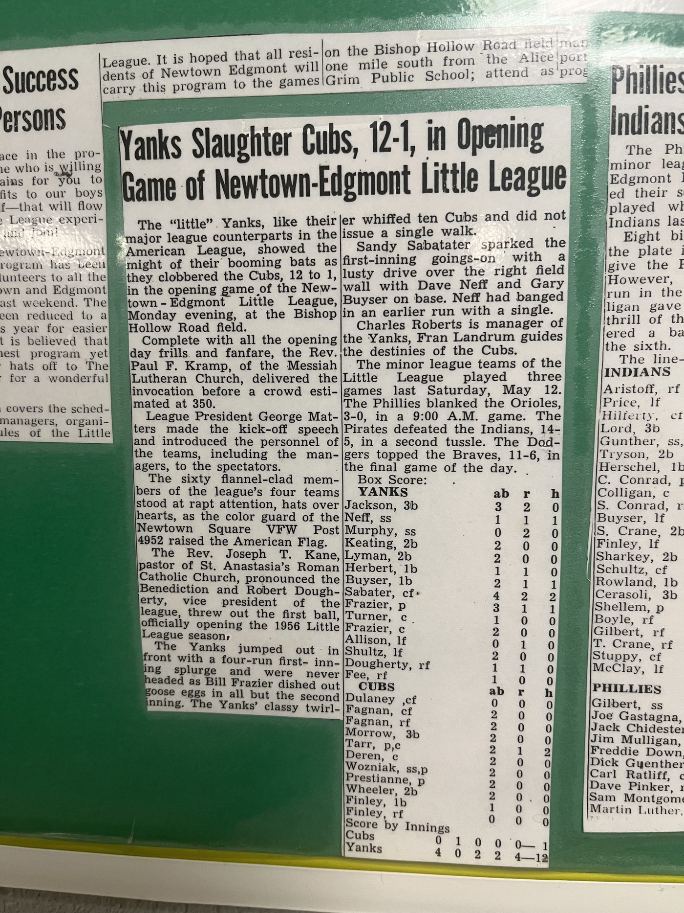
Opening night, Bishop Hollow Road
The season opened Monday evening at Bishop Hollow Road with all the trimmings: an invocation from Reverend Paul F. Kramp of Messiah Lutheran Church before an estimated crowd of 350, a kickoff speech and team introductions from league president George Matters, a flag-raising by the color guard of the Newtown Square VFW Post 4952, a benediction from Reverend Joseph T. Kane of St. Anastasia's, and the ceremonial first pitch thrown by league vice president Robert Dougherty. Then the Yanks put on a show: a four-run first inning was all the cushion Bill Frazier needed, as he whiffed ten Cubs and didn't issue a single walk, blanking them in every inning but the second. Sandy Sabater's drive over the right-field wall, with Dave Neff and Gary Buyser aboard, was the big blow. Charles Roberts managed the Yanks; Fran Landrum guided the Cubs.
The league's minor-league teams also opened that Saturday, May 12: the Phillies blanked the Orioles 3–0, the Pirates topped the Indians 14–5, and the Dodgers defeated the Braves 11–6.
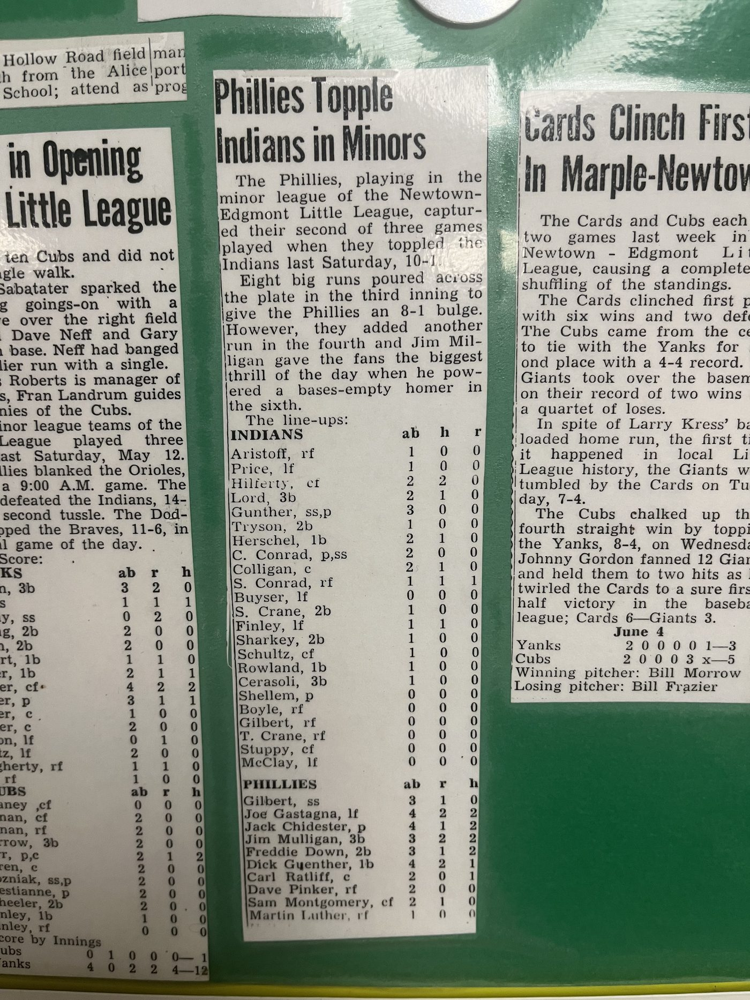
Minor-league coverage
Playing in the Newtown-Edgmont minor league, the Phillies captured the second of their three games against the Indians, 10–1. Eight runs crossed the plate in the third inning to build an 8–1 lead, and Jim Milligan gave the crowd its biggest thrill with a bases-empty home run in the sixth.
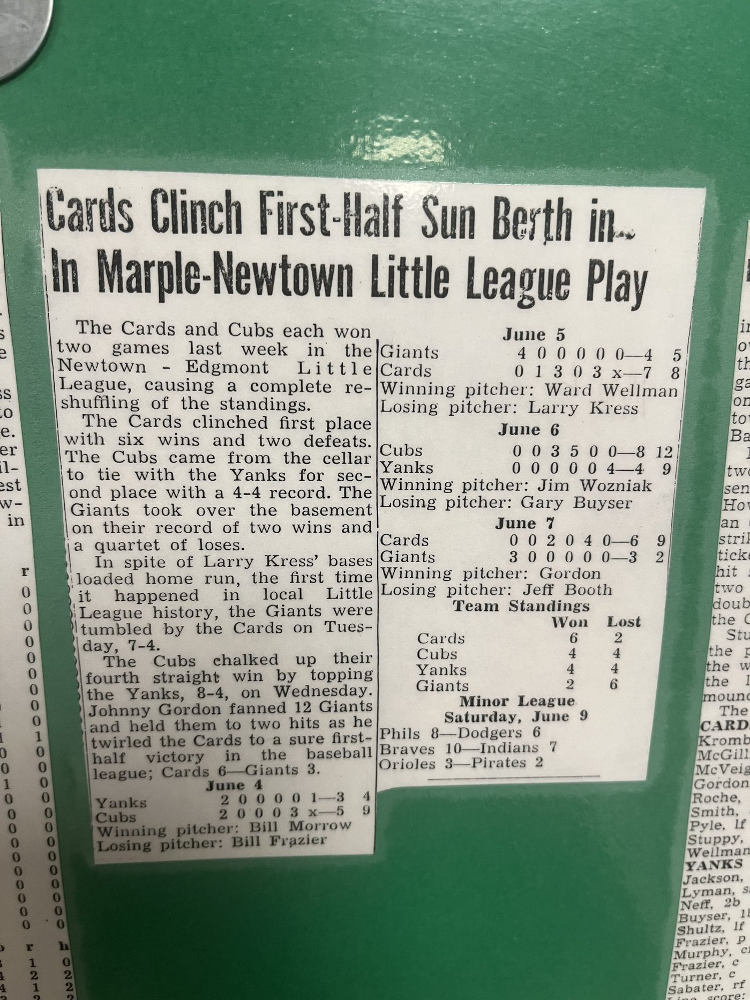
Early-June standings shakeup
The Cards and Cubs each won two games in a single week, upending the table. The Cards clinched first place at 6–2; the Cubs climbed from the cellar to tie the Yanks for second at 4–4; the Giants took over the basement at 2–6. Larry Kress hit a bases-loaded home run — the first in local Little League history, by the paper's account — but the Giants were still toppled by the Cards, 7–4. The Cubs' fourth straight win came behind Johnny Gordon, who fanned twelve Giants and held them to two hits in an 8–4 win over the Yanks, and the Cards clinched the first-half crown outright with a 6–3 win over the Giants.
| Team | Won | Lost |
|---|---|---|
| Cards | 6 | 2 |
| Cubs | 4 | 4 |
| Yanks | 4 | 4 |
| Giants | 2 | 6 |
Minor league, Saturday June 9: Phils 8, Dodgers 6 · Braves 10, Indians 7 · Orioles 3, Pirates 2.
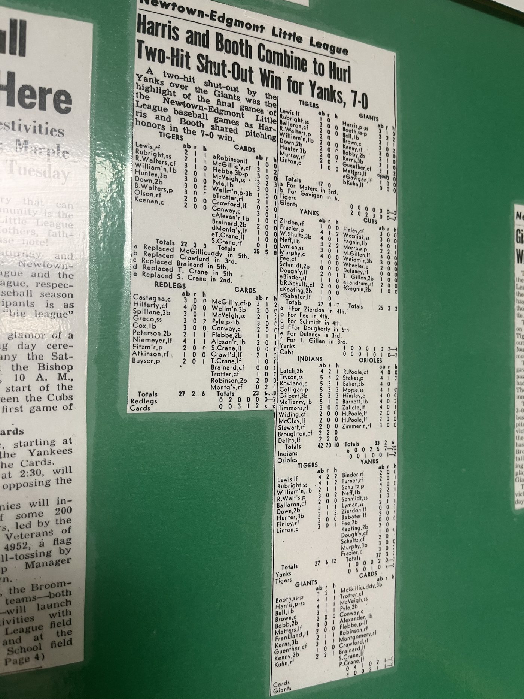
Closing week of the season
A two-hit shutout in the closing games of the season was the headline act, with pitchers Harris and Booth sharing the honors. The clearest box score on this heavily cropped clipping shows a Giants pitching pair (Harris and Booth) blanking the Tigers 7–0, and elsewhere on the same page a Yanks–Cubs game ended 4–2 in the Yanks' favor. A separate minor-league box score records a lopsided 20–2 Indians win over the Orioles. Several additional box scores are packed onto this one clipping — including Redlegs–Cards and a second Tigers game — but portions are cropped or too faint to transcribe with confidence, so they're preserved here as images only rather than guessed-at text.
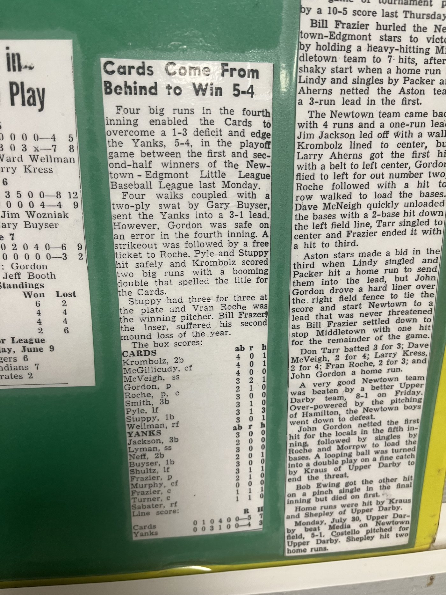
The championship playoff
In the playoff between the league's first- and second-half winners, four big runs in the fourth inning let the Cards erase a 1–3 deficit and edge the Yanks, 5–4. Four walks and a Gary Buyser double had put the Yanks up 3–1, but a Cards error, a walk to Roche, hits by Pyle and Stuppy, and a two-run double by Skip Kromboltz turned the game. Stuppy went 3-for-3 on the day; Fran Roche was credited with the win, while Bill Frazier took his second mound loss of the year.
| Cards (5) | |||
|---|---|---|---|
| AB | R | H | |
| Kromboltz, 2b | 4 | 0 | 1 |
| McGillicuddy, cf | 4 | 0 | 1 |
| McVeigh, ss | 4 | 2 | 1 |
| Gordon, p | 3 | 1 | 0 |
| Roche, p/c | 2 | 1 | 0 |
| Smith, 3b | 3 | 1 | 0 |
| Pyle, lf | 3 | 1 | 3 |
| Stuppy, 1b | 3 | 0 | 1 |
| Wellman, rf | 3 | 0 | 0 |
| Yanks (4) | |||
|---|---|---|---|
| AB | R | H | |
| Jackson, 3b | 3 | 0 | 0 |
| Lyman, ss | 2 | 0 | 0 |
| Neff, 2b | 3 | 0 | 1 |
| Buyser, 1b | 3 | 0 | 1 |
| Shultz, lf | 3 | 1 | 1 |
| Frazier, p | 2 | 1 | 0 |
| Murphy, cf | 0 | 0 | 0 |
| Frazier, c | 1 | 1 | 0 |
| Turner, c | 1 | 0 | 0 |
| Sabater, rf | — | — | — |
By innings — Cards: 0 1 0 4 0 0 (5) | Yanks: 0 0 3 1 0 0 (4).
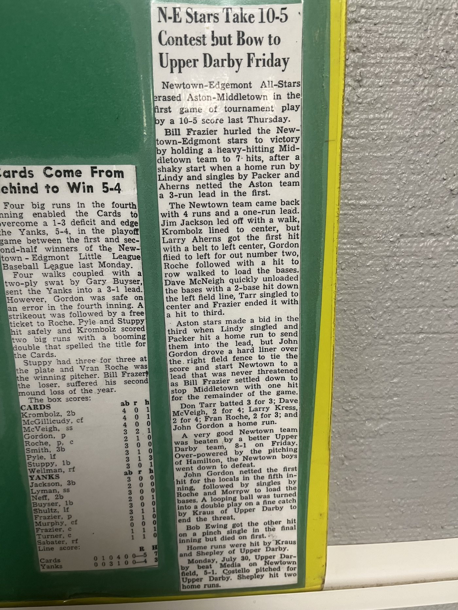
All-Star tournament play
The Newtown-Edgmont All-Stars erased Aston-Middletown 10–5 in their tournament opener. Bill Frazier held a heavy-hitting Middletown lineup to seven hits after a shaky start — a Lindy home run and singles by Packer and Aherns had staked Aston to an early 3-run lead. Newtown answered with four runs of its own on hits by Aherns, Roche, and a bases-clearing double from Dave McVeigh, plus RBI singles from Don Tarr and Frazier himself. Aston briefly regained the lead in the third on a Packer homer, but John Gordon's liner over the right-field fence tied it back up and started a lead Newtown never relinquished; Frazier settled in to allow just one more hit the rest of the way. Don Tarr went 3-for-3; Dave McVeigh, 2-for-4; Larry Kress, 2-for-4; Fran Roche, 2-for-3; and John Gordon added a home run.
The good run ended two days later: a "very good Newtown team was beaten by a better Upper Darby team, 8–1," overpowered by the pitching of Hamilton. John Gordon had the locals' first hit in the fifth, and a bases-loading rally was snuffed out by a diving, inning-ending double play from Upper Darby's Kraus. Bob Ewing added a pinch-hit single in the final inning but was stranded. Kraus and Shepley both homered for Upper Darby. The following Monday, Upper Darby beat Media on the Newtown field, 5–1, with Shepley hitting two more home runs.
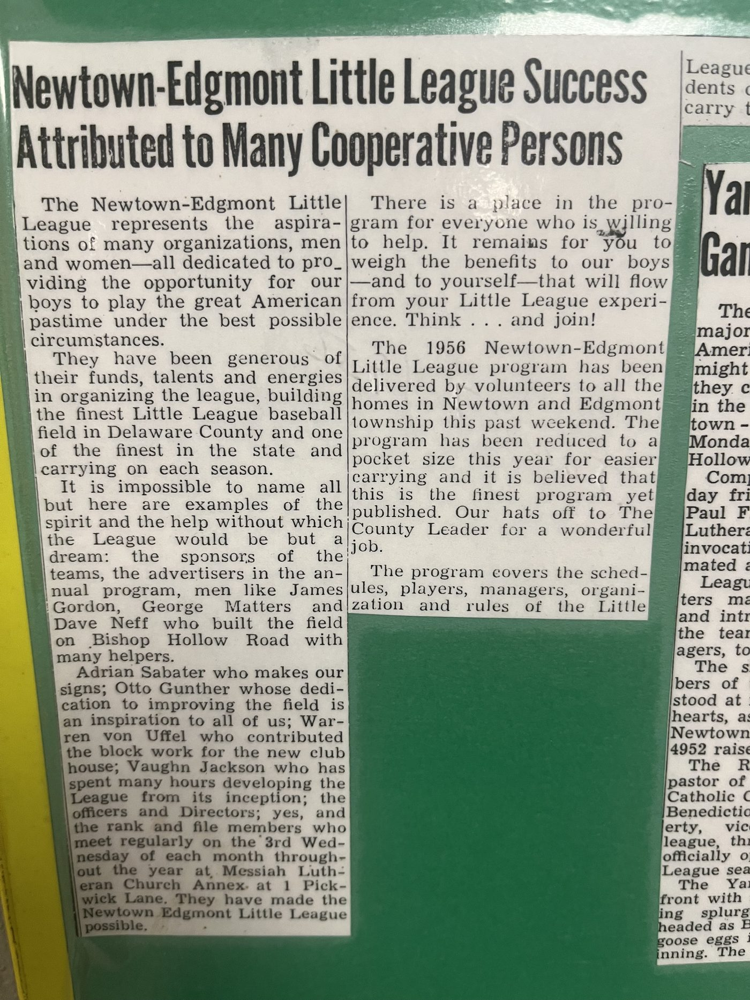
A thank-you to the volunteers
A community editorial credited the league's success to its volunteers: James Gordon, George Matters, and Dave Neff, who built the field on Bishop Hollow Road with many helpers; Adrian Sabater, who made the league's signs; Otto Gunther, whose dedication to improving the field was called "an inspiration to all of us"; Warren von Uffel, who contributed the block work for the new clubhouse; and Vaughn Jackson, who had spent years developing the league since its inception, along with officers and directors who met monthly at the Messiah Lutheran Church Annex. The piece noted the field was believed to be "the finest Little League baseball field in Delaware County and one of the finest in the state," and thanked the local paper for delivering that year's season program, by hand, to every home in both townships.
| Name | Team | Season |
|---|